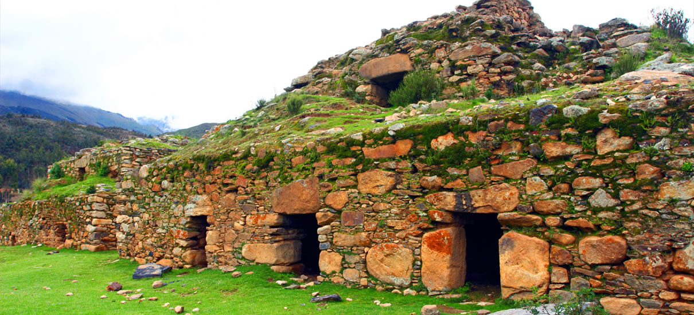
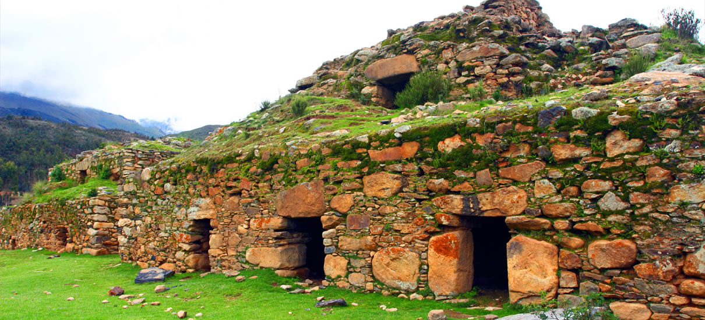

Introducción
Disfruta de un viaje inolvidable y de las maravillas narutales que Huaraz puede ofrecerte durante 2 días. Contempla la belleza de los paisajes montañosos y nevados, la inmesidad de las lagunas puras y cristalinas, sumergete en los baños termales naturales, explora de los vestigios de las antiguas civilizaciones o desenvuelvete con cualquiera de nuestras actividades al aire libre.
Incluye
- Recogida en el hotel y traslado de regreso
- Movilidad (compartida o privada)
- Guía turístico (español o inglés)
- Entrada al Parque Nacional Huascarán
No Incluye
- Almuerzo
- Gastos Adiciones o propinas
Recomendaciones
- Llevar ropa ligera y abrigadora
- Llevar calzado cómodo para caminatas
- Llevar impermeables o ponchos (en caso de lluvias)
- Levar ropa de baño
- Llevar gorro para el sol, lentes para el sol y bloqueador solar
- Llevar repelentes contra insectos
- Llevar stick labial
- Llevar cámara fotográfica o filmadora
- Traer box lunch: frutas, granolas, barras energéticas, etc.
- Traer bebidas rehidratantes (al menos 1 litro y medio)
- Traer botiquín personal para pequeñas lesiones y malestares
- Traer brújula y silbato